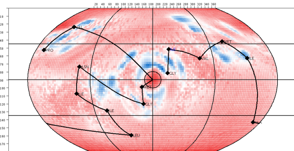

The Contact Geometry Analysis Plugin (CGAP) for CMView

What is CGAP?
CGAP is an experimental plugin for the CMView contact map analysis software. It provides rich,
interactive tools for analysing the geometric environment of residue-residue contacts in protein structures. The idea is similar to that of the
well-known Ramachandran plot. But instead of dihedral angles CGAP
visualises angular preferences for arbitrary contacts. It also shows how a selected contact compares to angular preferences observed in the PDB.
This information can be used in an explorative way to find and understand residue interaction patterns or in a more applied way for structure modelling.
Installation
- Install CMView (if not yet installed)
- Download the file SphoxelBGs.zip with the background statistics (don't unzip!)
- Download and unzip the file cgap_db_data.zip with the database dumps
- You should now have the following files in your download directory:
- SphoxelBGs.zip (866MB)
- cullpdb_20_edges.txt (1.3GB)
- cullpdb_20_nbhstrings.txt (5.7MB)
- rvecs10.txt (58MB)
- cgap_create_db.sql (<1KB)
- Install MySQL (if not yet installed) and create a user with sufficient privileges to create a database cmview_cgap
- Run the script cgap_create_db.sql from MySQL to create the database and tables and load the data, e.g.
cat cgap_create_db.sq | mysql
- You can now move SphoxelBGs.zip to a permanent location (e.g. the CMView installation directory) and delete the other downloaded files
- Set the following parameters in your CMView config file (cmview.cfg):
- USE_CGAP=true
- SPHOXEL_BG_FILE_PATH=/full/path/to/downloaded/file/SphoxelBGs.zip
- DB_USER= (your username)
- DB_PWD= (your password)
- DB_HOST= (mysql host name, usually localhost)
- CGAP_DB_NAME=cmview_cgap
Notes
- To use CGAP from CMView, load a protein structure (e.g. from Online PDB), then right click on a residue pair in the contact map windows and select Explore Contact Geometry.
- At least the file SphoxelBG.zip is required. Without it, CGAP will not work.
- Without the database, CGAP will still work but no traces for similar residue environments will be shown.
- Please send feedback and questions to the cmview-users mailing list.
Downloads
SphoxelBGs.zip (866MB) (Mirror)
cgap_db_data.zip (506MB) (Mirror)
Manual (PDF)